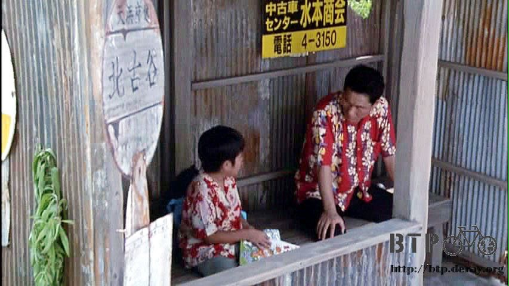
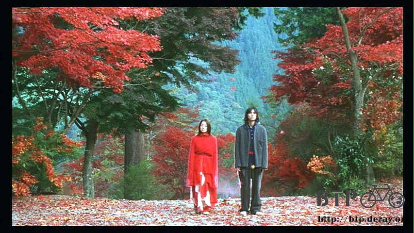

天氣時好時壞，依然轉變得很快，這一刻是晴天，下一分鐘就下起大雨，像這樣的氣候反覆交替著。
窩在旅館房間的我，整天都在看北野武的電影，真的相當的好看，休息得很充實。
今天看了『菊次郎的夏天』，講一個和婆婆相依為命的小孩放暑假的時候去找媽媽的故事。
出發不到一小時就被壞孩子勒索，結果讓一個比壞孩子還傷腦筋的大人帶著一起去找媽媽。
一路上發生很多事情，故事很長，不是找到媽媽就結束這麼簡單，而且有著北野武的超搞笑風格，同時也很感人 。

另外還看了『玩偶』，這部片大概是難得北野武導演的電影，但是他自己沒有下海去演。
片中交錯了三個愛情故事，命運紅繩羈絆的故事貫穿全場，另外兩個只是點綴而已。
一對戀人用紅繩將彼此繫在一起，女的因為男方拋棄她而心智失常，男的則放不下這段戀情而捨棄前程，兩人無言的踏上春夏秋冬的旅行。
很感人的一部片，加上久石讓的音樂、山本耀司的服裝、超美的取景，真不敢相信這是北野武的電影。
因為大家都說北野武是暴力美學，打打殺殺的黑社會類型，也許看了這部片之後就會有所改觀。

『BROTHER』，標準的北野武暴力美學，日本的黑社會老大到美國打拼的故事，片子一樣很長，
但是看起來不會有冗長的感覺，因為實在太精采了，這部片我已經看過很多次，每次都被劇本和演出深深吸引。
『座頭市』講的是古代日本的盲劍客故事，本來覺得這一類的日本古裝片都很無聊，但是實際看了之後才扭轉了這個刻板印象。
這部片很噴血，噴到有點搞笑，同時也是北野武演出最認真的一部片吧，其它電影都會感覺他在邊演邊玩，這部片就很用心。
另外還有很多，像是『花火』、『小心惡警』、『3-4X10月』、『壞孩子的天空』、『性愛狂想曲』...
一口氣看了這麼多北野武的電影，發現原來參加演出他電影的人都是一些熟面孔。
若有喜歡的角色在這部片死掉了，下部片又會以不同的身分重新登場，這一點還蠻有意思的。
除了看電影之外，肚子餓的時候就去加油站的餐廳吃飯，雖然菜單我看不懂，但是價錢是阿拉伯數字我還能分辨貴和便宜。
這間旅館附設的餐廳東西真是貴到讓人叫救命，已經住得不便宜了，吃的方面就省一點，步行三百公尺去加油站吃飯，因為沉迷於電影，今天只吃了一餐。
除了悠閒的看了一整天的電影之外，因為明天就要入境俄羅斯，所以也溫習了幾句俄語。
俄語真是很難學，舌頭練到都快要打結了，只有一句『謝謝』還算唸的出來，其它就等到了俄羅斯再慢慢磨吧。
下一片繼續播放，依然是北野武的『那年夏天寧靜的海』，噓.....保持安靜。
繼續閱讀：7.21 歡迎光臨俄羅斯
哈薩克-堅戈－ 1：0.26 台幣
7.20
總計：2470元
午餐高麗菜酸湯、咖啡、麵包250元、蘋果汁220元、餅乾、蛋糕200元、旅館2000元